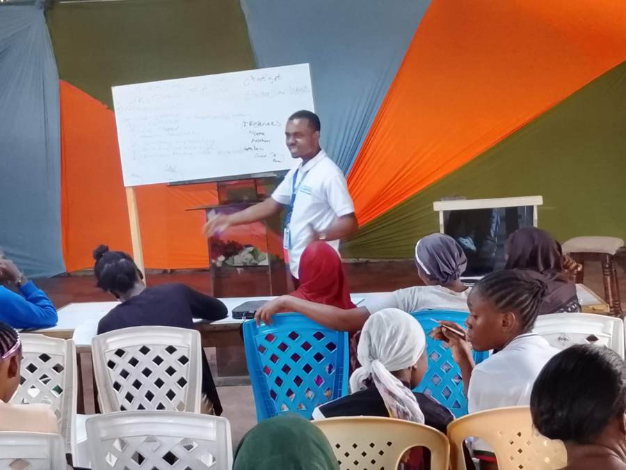
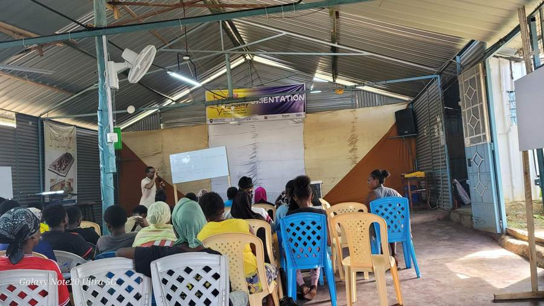
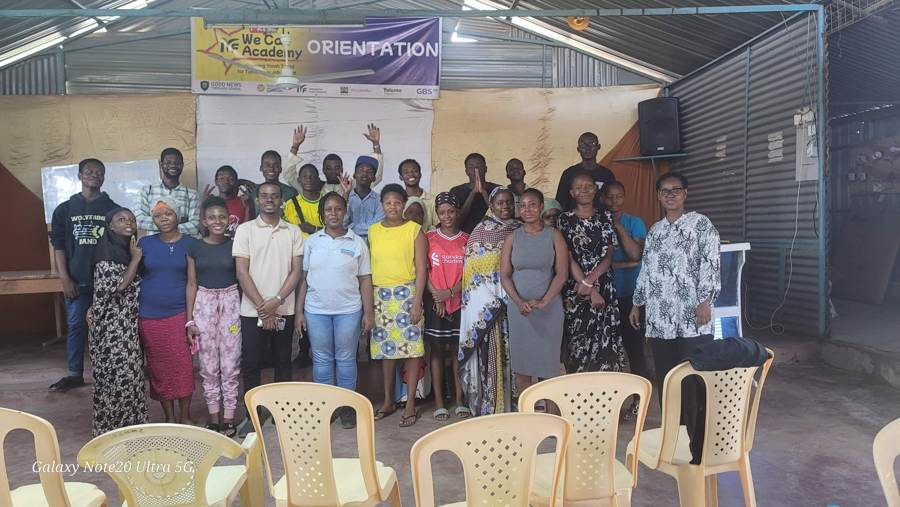
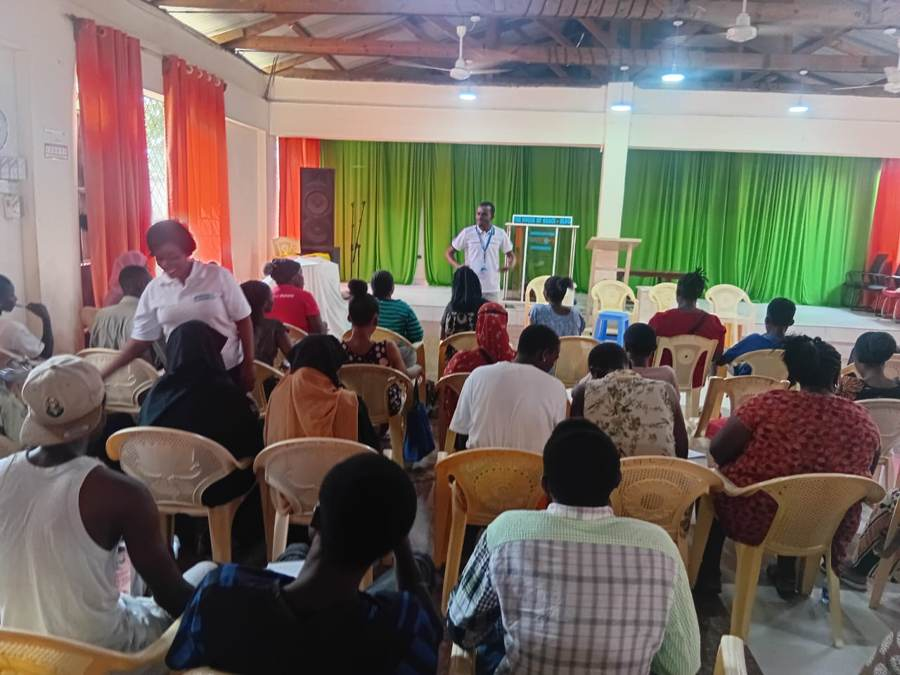
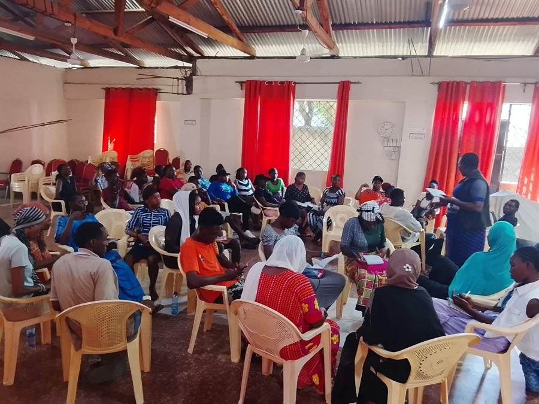
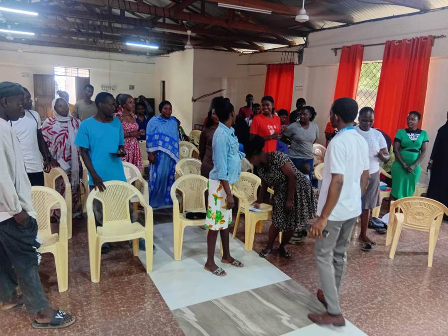
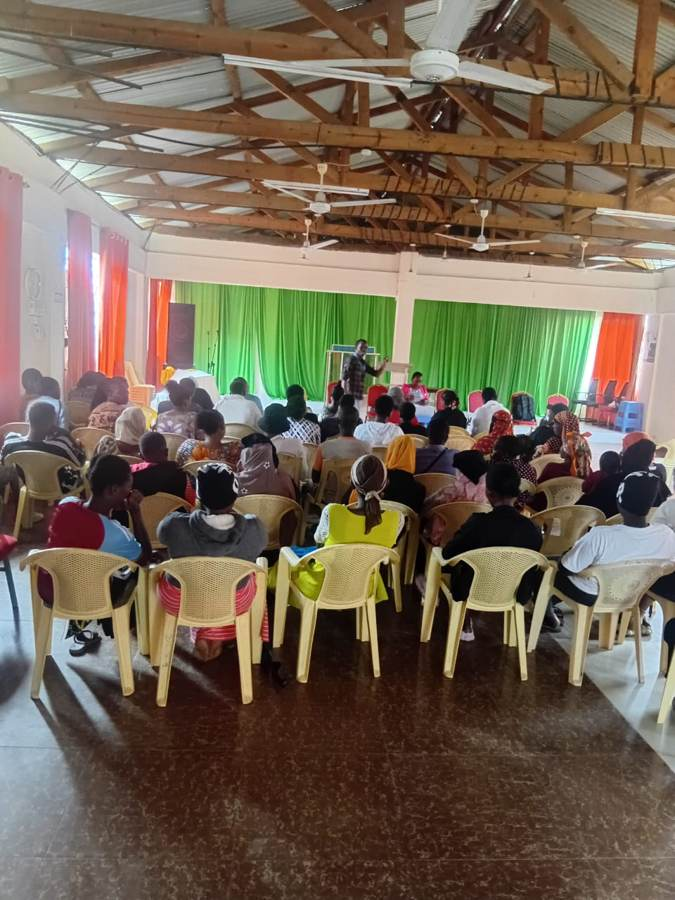
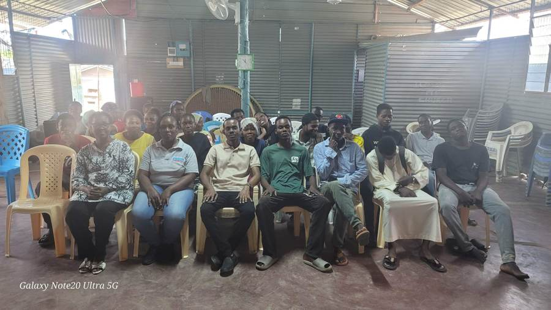
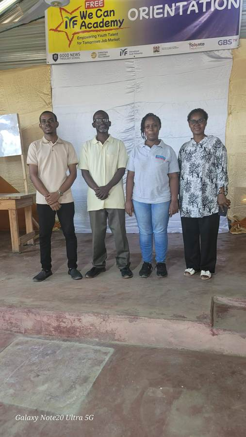

Programme Coordinator and Capacity Building Trainer for NGO and community programmes.
NITA-certified Trainer of Trainers and industrial engineer with 5+ years in sustainable livelihoods, M&E, budget control and donor reporting. Based in Mombasa, available across Kenya.
Contact meSee the evidence- Programme coordination
- Capacity building & TOT
- M&E / MEAL
- Donor reporting
- English & Kiswahili

Impact in numbers
Every figure comes from my programme records and can be confirmed by my supervisors (see Verify).
Youth and community reach (SHOFCO)
Same scale for all bars. The 5,000+ registered beneficiaries I coordinate are not drawn.
Processing time, Watu Credit (47+ locations)
Throughput (before = 100)
Turnaround cut by 75%. Throughput up 185%.
Financial accountability
No overruns and no audit findings across a 5,000+ beneficiary programme.
Also: KES 10 million in records reconciled at 100% accuracy.
Roles I am targeting
Core competencies
Why I am the right fit for your NGO
Most programmes stall in delivery. I close the gap between plan and result.
Engineer’s efficiency
BEng Industrial Engineering and Lean Six Sigma Yellow Belt. I streamline programme workflows to save time and cost.
NITA-certified trainer
Trainer of Trainers in Financial Literacy. I train youth, staff and volunteers using participatory methods.
Donor-ready
M&E tools, beneficiary tracking, data protection and weekly and monthly reports for leadership and donors.
Community-rooted
Based in Mombasa, leading community mobilisation and enrolment in Kiswahili and English.
Professional experience
SHOFCO (Shining Hope for Communities)
Youth Programme Coordinator & Capacity Building Trainer, Mombasa | Jul 2022 – Present- Career consultations, CVs, cover letters and job-search coaching.
- Coordination of activities for 5,000+ beneficiaries with donor reporting.
- Training staff and volunteers on data, reporting and SOPs.
Watu Credit
Operations Assistant, Nyali | Jul 2020 – Jul 2022- Led a 13-person team and redesigned workflows with Lean Six Sigma.
- KES 10 million in records reconciled at 100% accuracy.
Skills and credentials
- NITA Certified Trainer of Trainers, Financial Literacy, 2025
- Lean Six Sigma Yellow Belt, 2025
- AI for Project Management, Oxford Home Studies, 2026
- Microsoft Excel Advanced, 2022
- BEng Industrial Engineering, Moi University, 2019
My training work in the field
Training youth in livelihoods, entrepreneurship and job readiness.








Verify my claims
I welcome reference checks. My supervisors can confirm roles, dates and results.
| Claim | Where to verify |
|---|---|
| 50+ youth guided, 20 employed | Sustainable Livelihood Facilitator, SHOFCO Mombasa |
| SUN and SACCO enrolment | SUN Facilitator (Nyali), SHOFCO |
| Process gains and 13-person team | Former supervisor, Watu Credit |
| NITA ToT certificate and degree | Copies of certificates available on request |
Referee phone numbers and emails are shared with employers in an active hiring process, to protect their privacy.
Recruiter questions
What kind of role are you available for?
Full-time, consultancy and fixed-term roles anywhere in Kenya. Contact me to agree a start date.
Which roles does your background fit?
Programme Coordinator, Programme Officer, Livelihoods Officer, M&E Officer, Capacity Building Trainer, Programme Operations Officer.
Are participants’ photos used with consent?
Photos are from public training sessions. Anyone who wants to be removed can email me and I will take the photo down immediately.
Where do the figures come from?
From programme records and my CV, not estimates. I can share supporting evidence on request, without breaching beneficiary confidentiality.
Let’s work together
Open to opportunities across Kenya. I reply promptly.
Mohamed Msuko
Programme Coordinator | NITA-certified Trainer
- 📞 +254 721 776 308
- ✉️ msukomohd@gmail.com
- 📍 Mombasa, Kenya